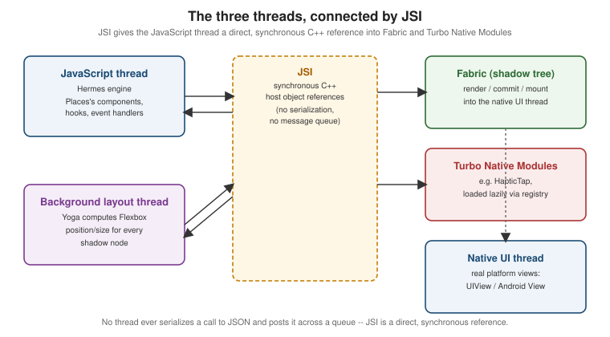
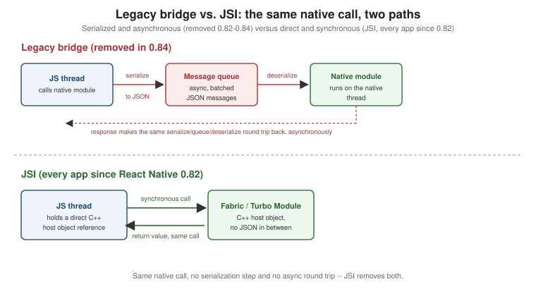

React Native Architecture Under the Hood
|
This content was generated with the assistance of AI and should be verified against the official documentation before being relied on in production. |
Getting Started with React Native introduced what React Native renders — real native views, not a WebView. This page covers how: the three threads a running app spans, the New Architecture that has been React Native’s only architecture since 0.82 (JSI, Fabric, Turbo Native Modules, Codegen, and bridgeless mode), what that architecture buys concurrent React on native, and — for context when reading older code or blog posts — the legacy bridge it replaced.
The Three Threads
A running React Native app spans three threads, each with a distinct job:
-
The JavaScript thread. Runs the app’s own code — every component, hook, and event handler — executed by Hermes, React Native’s own JavaScript engine (Hermes V1 by default since React Native 0.84, ahead-of-time bytecode compiled for faster startup than parsing source JS on-device).
-
The main (UI) thread. The platform’s own UI thread —
UIView/CALayeron iOS, the AndroidViewhierarchy’s own thread — which owns the actual native views Places'sPlaceCard,FlatList, and every other component eventually become, and is the only thread allowed to touch them directly. -
A background layout thread. Fabric’s shadow thread, where Yoga (React Native’s Flexbox layout engine) computes every node’s position and size against the tree Fabric committed, off both the JS thread and the UI thread so a layout pass never blocks either.

JSI: a Synchronous Interface, Not a Bridge
The JavaScript Interface (JSI) is a lightweight, synchronous C interface that lets JavaScript objects hold direct references to C host objects — and call C methods on them, and be called back from C — without serializing anything to JSON or crossing a message queue. This replaces what the legacy bridge (covered near the end of this page) used to do by encoding every call as a JSON message and posting it asynchronously between threads: with JSI, Fabric and a Turbo Native Module are just C++ objects the JavaScript thread holds a live reference to, so a call into them is a normal (if cross-language) synchronous function call.

Fabric: the Render Pipeline
Fabric is React Native’s renderer, and every screen — Places's PlacesListScreen, its FlatList of
`PlaceCard`s, everything — goes through the same three-phase pipeline on every update:
-
Render. React runs your component code and produces a React element tree in JavaScript, exactly as it would for a web app; Fabric then creates a shadow tree — an immutable C++ mirror of that element tree, one shadow node per component, carrying its resolved props and styles.
-
Commit. Fabric asks Yoga to calculate layout (position and size for every shadow node, from its Flexbox styles and its parent’s constraints) against the new shadow tree, then promotes that tree as the next one to mount — an atomic swap, never a partially-applied tree.
-
Mount. The committed shadow tree is diffed against the previously mounted one, and only the actual differences — a node added, removed, or re-styled — are applied to the real native view tree, on the UI thread.
Fabric also performs view flattening: a shadow node that draws nothing itself (a View used purely for
Flexbox grouping, with no background, border, or other visible styling) is dropped from the mounted native tree
entirely, so Places's nested layout wrappers do not each cost a real native view at render time.
Turbo Native Modules and Codegen
A Turbo Native Module is a native (Kotlin/Swift) capability exposed to JavaScript as a typed JSI host
object, loaded lazily the first time JavaScript actually references it — through a registry
(TurboModuleRegistry.getEnforcing) — rather than every native module being eagerly initialized at app
startup the way legacy bridge modules were. Places's own HapticTap module (built in full on
Native Modules and Components, later in
this section) is declared once as a TypeScript spec:
// src/native/HapticTap.ts
import type { TurboModule } from 'react-native';
import { TurboModuleRegistry } from 'react-native';
export type HapticStyle = 'light' | 'medium' | 'heavy';
export interface Spec extends TurboModule {
tap(style: HapticStyle): void;
}
export default TurboModuleRegistry.getEnforcing<Spec>('HapticTap');Codegen reads that same spec at build time and generates the matching native interfaces — a Java/Kotlin
interface on Android, an Objective-C++ protocol on iOS — that the hand-written HapticTapModule/HapticTap.swift
implementation conforms to, so the JavaScript-facing types and the native signature can never drift apart the way
a hand-maintained bridge module’s types could.
Bridgeless mode is the logical conclusion of JSI: with no serialized bridge to fall back to, the legacy bridge object itself is never constructed, and every native interaction — rendering through Fabric, calling a Turbo Native Module — goes through JSI from process start. Every app built against React Native 0.82 or later, including Places, runs bridgeless with no opt-out.
What Concurrent React Gives You on Native
React Native 0.76 brought support for React’s concurrent features to native, the same ones the React reference documents for the web:
-
Automatic batching. Multiple
setStatecalls inside the same event handler — or inside a promise callback, a timeout, or a native event callback, which used to not batch under the legacy bridge — now produce a single re-render, not one per call. -
Suspense. A component can suspend while data it needs is still loading, and React shows a fallback in its place instead of the component rendering with incomplete data.
-
Transitions (
startTransition). Marking a state update as a transition tells React it is allowed to interrupt that update to keep the UI responsive to more urgent input — typing, scrolling — while the transition’s own re-render happens at lower priority. Places's search filter (below) uses this directly. -
Synchronous
useLayoutEffect. Runs after Fabric has mounted the new native view tree but before the screen actually paints, synchronously — the correct place to measure a just-mounted or just-resized native view and apply a follow-up layout change (positioning a tooltip, for example) without a visible flash of the wrong position.
Measuring a Native View: useLayoutEffect vs. the Old onLayout-Only Approach
Positioning a tooltip above Places's favourite button needs the button’s on-screen coordinates once it has
actually mounted. The old, onLayout-only approach only ever knows the view’s size and position relative to
its own parent, not its absolute position on screen, so anchoring a tooltip correctly needed extra parent-offset
bookkeeping:
// Old approach: onLayout only gives coordinates relative to the parent.
function FavouriteButtonOld() {
const [layout, setLayout] = useState<{ x: number; y: number } | null>(null);
return (
<Pressable
onLayout={(event) => {
const { x, y } = event.nativeEvent.layout; // relative to the parent, not the screen
setLayout({ x, y });
}}
>
<Text>☆</Text>
</Pressable>
);
}useLayoutEffect plus measureInWindow — callable once the ref is attached, synchronously before paint — gives the button’s actual on-screen position directly, which is what a tooltip anchored in a portal at the root
of the screen actually needs:
// src/features/places/components/FavouriteButton.tsx
import { useLayoutEffect, useRef, useState } from 'react';
import { Pressable, Text } from 'react-native';
interface ScreenPosition {
pageX: number;
pageY: number;
}
function FavouriteButton() {
const buttonRef = useRef<React.ComponentRef<typeof Pressable>>(null);
const [tooltipAnchor, setTooltipAnchor] = useState<ScreenPosition | null>(null);
useLayoutEffect(() => {
buttonRef.current?.measureInWindow((pageX, pageY) => {
setTooltipAnchor({ pageX, pageY });
});
}, []);
return (
<Pressable ref={buttonRef}>
<Text>☆</Text>
</Pressable>
);
}Filtering the Places List with startTransition
Typing into Places's search box filters a potentially long usePlaces() result set. Wrapping the filter’s own
state update in startTransition keeps every keystroke itself feeling instant, since React can interrupt the
(lower-priority) filtering re-render if another keystroke arrives before it finishes:
// src/features/places/screens/PlacesListScreen.tsx (excerpt)
import { useState, useTransition } from 'react';
import { TextInput } from 'react-native';
import { usePlaces } from '../hooks/usePlaces';
function PlacesSearch() {
const { data } = usePlaces();
const [query, setQuery] = useState('');
const [filterQuery, setFilterQuery] = useState('');
const [isFiltering, startTransition] = useTransition();
const places = data?.pages.flatMap((page) => page.items) ?? [];
const filtered = places.filter((place) =>
place.name.toLowerCase().includes(filterQuery.toLowerCase()),
);
return (
<TextInput
value={query}
onChangeText={(text) => {
setQuery(text); // urgent: the input must echo every keystroke immediately
startTransition(() => {
setFilterQuery(text); // lower priority: interruptible if another keystroke arrives
});
}}
placeholder="Search places"
/>
);
// `filtered` and `isFiltering` render the list and an optional stale-results indicator.
}The Legacy Bridge (Historical)
Before JSI, every interaction between JavaScript and native code — a native module call, a layout update — was serialized to JSON and posted asynchronously across a message queue between the JavaScript thread and the native (UI) thread: the "bridge". This was necessarily asynchronous (a call could not return a value synchronously, since the message had to round-trip a queue), and every payload paid the cost of JSON serialization and deserialization on both ends, which is exactly what JSI’s direct, synchronous C++ references eliminate.
React Native 0.82 was the first release to run entirely on the New Architecture — the legacy bridge could no longer be re-enabled — and React Native 0.84 removed the legacy bridge’s code from the codebase outright. In between, and for any third-party native module not yet migrated to a Turbo Native Module, a Legacy Interop Layer transparently wrapped old-style native modules so they kept working under bridgeless JSI without a rewrite; Places depends on no such module, so this section never needs to invoke it directly.